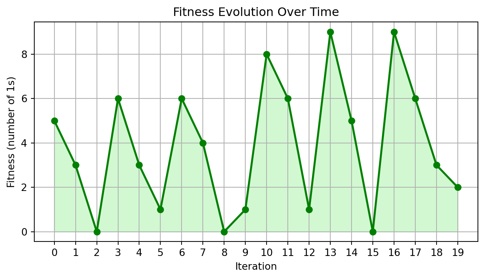

import numpy as np
import matplotlib.pyplot as plt
import seaborn as sns
def one_max(binary_string):
return sum(binary_string)
# Example usage: # Length of the binary string
n = 10
# Generate a random binary string of length n
binary_string = np.random.randint(0, 2, size=n).tolist()
# Calculate the fitness
fitness = one_max(binary_string)
print(f"Binary string: {binary_string}")
print(f"Fitness (number of 1s): {fitness}")
iterations = 20
fitness_over_time = [np.random.randint(0, n + 1) for _ in range(iterations)] # Random example of fitness change
# Line plot of fitness over iterations
plt.figure(figsize=(10, 4))
plt.plot(range(iterations), fitness_over_time, marker='o', color='green', linestyle='-', linewidth=2)
plt.fill_between(range(iterations), fitness_over_time, color='lightgreen', alpha=0.4)
plt.title(f"Fitness Evolution Over Time")
plt.xlabel("Iteration")
plt.ylabel("Fitness (number of 1s)")
plt.xticks(np.arange(0, iterations, step=1)) # Show whole numbers on the x-axis
plt.grid(True)
plt.show()Binary string: [0, 1, 0, 1, 0, 1, 0, 0, 0, 1]
Fitness (number of 1s): 4